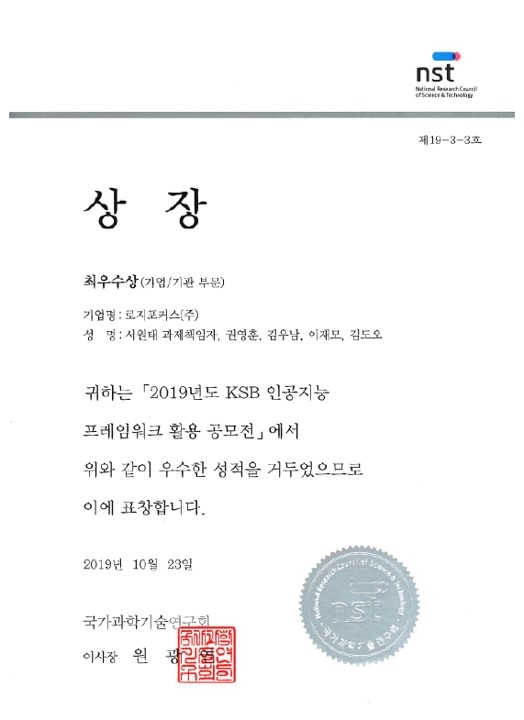
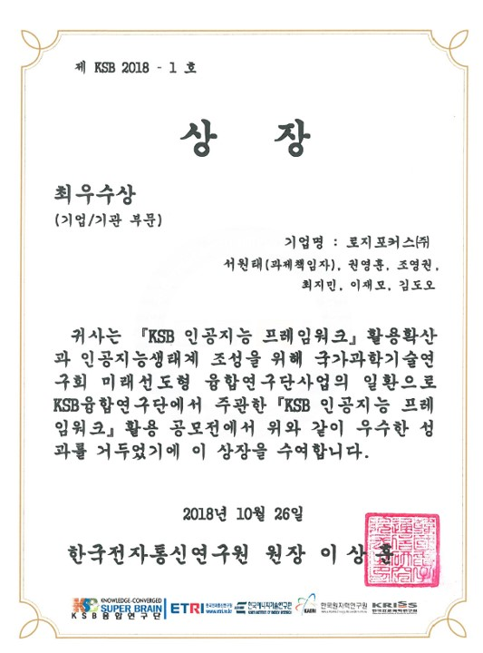
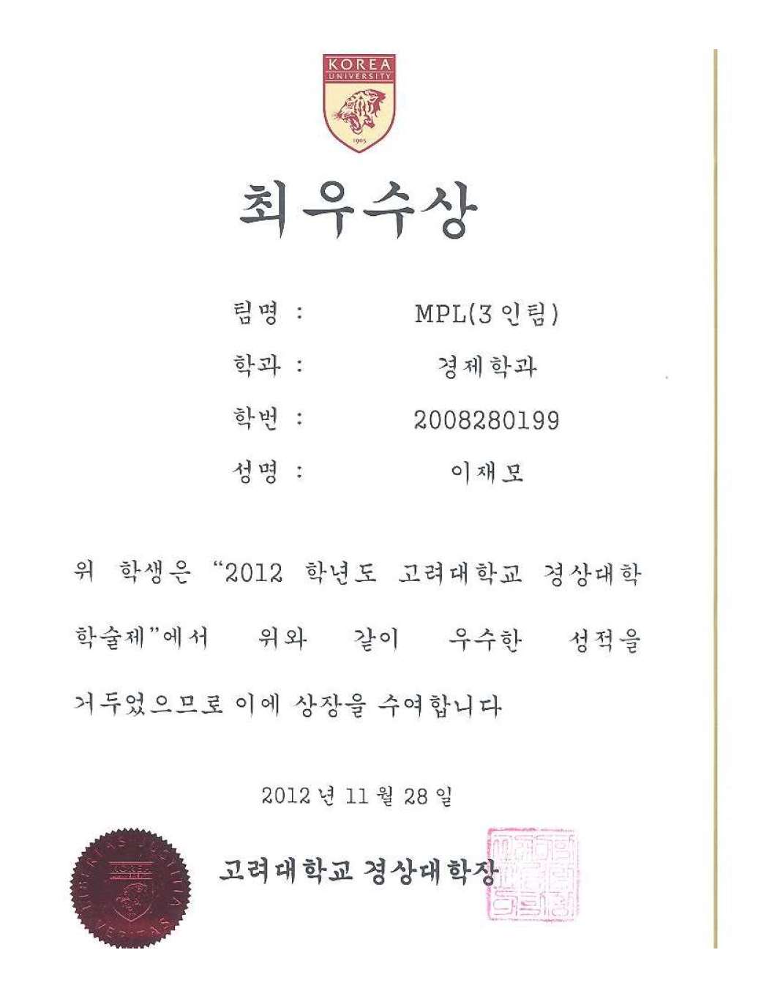

정책 기획 2013~
국가 의제를 설정하고 논리모형으로 타당성을 입증한 '설계자의 눈'
"기술의 유무가 아니라, AI를 조직과 제품에 담는 방식이 성패를 가른다."
정책 기획의 논리, AI 연구개발의 기술 이해, 엔터프라이즈 사업개발의 시장 감각을 하나로 잇습니다. 최근에는 LLM 기반 서비스를 직접 기획·개발해 사내 정식 제품으로 출시했습니다.
정책에서 기술로, 다시 사업으로. "문제를 기술과 논리로 푼다"는 하나의 선이 이제 AI 서비스 기획으로 이어집니다.
국가 의제를 설정하고 논리모형으로 타당성을 입증한 '설계자의 눈'
기획을 실제 기술로 구현하고 13.4억 사업비를 확보한 '실행력'
맨바닥에서 시장 반응 지점을 찾아 80억 매출로 연결한 '현장 감각'
사람과 AI의 최적 분업 구조를 정밀하게 설계하는 두 번째 커리어의 정점
"이 업무를 사람이 꼭 해야 하는가"를 기준으로 업무를 분해하고, 파이썬과 AI로 직접 시제품을 만들어 사내 업무부터 개인 프로젝트까지 실제로 운영해 왔습니다. 아래 분야 버튼으로 모아 볼 수 있습니다.
역할 · 기획 → 설계 → 개발 → 출시 전 과정 단독 수행
역할 · 개발 방법론을 표준화한 공통 개발 시스템을 직접 기획·구축·운영
역할 · 서비스 기획 → 설계 → 개발 전 과정 단독 수행
역할 · 기획 → 개발 → 사내 운영 전 과정 단독 수행
역할 · 기획 → 개발 → 사내 운영 전 과정 단독 수행
역할 · 기획 → 개발 → 사내 운영 전 과정 단독 수행
역할 · 기획 → 개발 → 사내 운영 전 과정 단독 수행
역할 · 기획 → 개발 → 사내 운영 전 과정 단독 수행
역할 · 기획 → 개발 → 사내 운영 전 과정 단독 수행
역할 · 기획 → 개발 → 사내 운영 전 과정 단독 수행
역할 · 외주 의뢰로 기획·개발 (전통주 콘텐츠 크리에이터 실사용)
역할 · 외주 의뢰로 기획·개발 (제조 대기업 실사용)
역할 · 기획 → 개발 → 운영 전 과정 단독 수행
역할 · 앱부터 백엔드 자동화까지 기획·개발 단독 수행
주요 활동
주요 성과
주요 활동
주요 성과
주요 활동 및 성과
주요 활동 및 성과
주요 활동 및 성과
서울시립대학교 경영대학원 2020.03 ~ 2022.02
경영학 석사(MBA) / 경영과학(오퍼레이션 리서치)
고려대학교 (세종) 2008.03 ~ 2015.08
경제학(심화) · 경영학(부전공)

2019 KSB 인공지능 프레임워크 활용 공모전 최우수상
국가과학기술연구회 2019.10

2018 KSB 인공지능 프레임워크 활용 공모전 최우수상
한국전자통신연구원 2018.10

고려대학교 경상대학 학술제 최우수상
고려대학교 경상대학 2012.11
AX 성과에 대한 생각
"AI를 조직과 제품에 담는 방식"을 다루는 티스토리 블로그